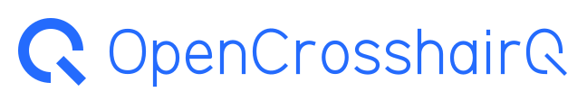
Letterforms originais em paths. Sem fonte incorporada ou externa.
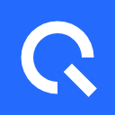
CQ para espaços curtos. Q isolado para app, tray e favicon.
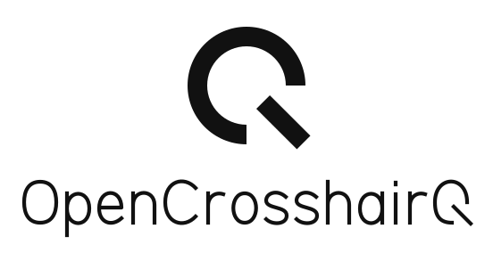
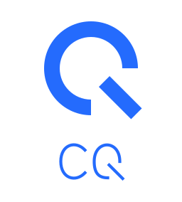
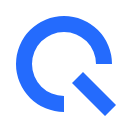
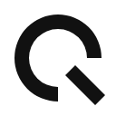
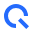
32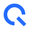
48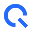
64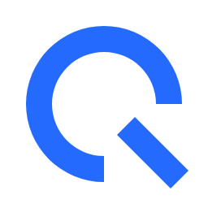
256 · mostrado a 160 px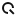
Abertura, anel e cauda preservados no bitmap nativo. Não usar wordmark em 16 px.
App: quadrado azul sem cantos pré-arredondados. Tray: símbolo mono transparente. README: wordmark completo.
SVG flat, sem scripts, gradientes, imagens ou links externos. Pesquisa de marca classe 9 pendente antes de uso oficial.